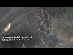

Científicos desmienten teorías conspirativas y afirman que el coronavirus tiene un origen natural
Desde el momento en que comenzó a expandirse por el mundo el coronavirus hubo quienes atribuyeron el origen del COVID-19 a teorías conspirativas de naciones y/o de laboratorios.
Científicos del Scripps Research Institute estudiaron el origen del COVID-19 y no encontraron evidencias de que el virus se haya creado en un laboratorio o diseñado de otra manera.
Luego de comparar los datos de secuencia del genoma disponibles para las cepas de coronavirus conocidas, concluyeron con certeza que el virus se originó por procesos naturales.
Poco después de que comenzara la epidemia, los científicos chinos secuenciaron el genoma del SARS-CoV-2 y pusieron los datos a disposición de investigadores de todo el mundo.
Los datos de la secuencia genómica resultante han demostrado que las autoridades chinas detectaron rápidamente la epidemia y que el número de casos de COVID-19 ha aumentado debido a la transmisión de persona a persona después de una sola introducción en la población humana.
Los científicos analizaron la plantilla genética para las proteínas espiga, armaduras en el exterior del virus que utiliza para atrapar y penetrar las paredes externas de las células humanas y animales.Más específicamente, se centraron en dos características importantes de la proteína espiga: el dominio de unión al receptor (RBD), que permite que se adhiera a las células huésped, y el sitio de escisión, que permite que el virus se abra e ingrese a las células anfitrionas.
La evidencia de la evolución natural
Los científicos descubrieron que la porción RBD de las proteínas de la punta del SARS-CoV-2 había evolucionado para enfocarse efectivamente en una característica molecular en el exterior de las células humanas llamada ACE2, un receptor involucrado en la regulación de la presión arterial.
La proteína del pico SARS-CoV-2 fue tan efectiva en la unión de las células humanas que los científicos concluyeron que era el resultado de la selección natural y no el producto de la ingeniería genética.
Esta evidencia de evolución natural fue respaldada por datos sobre la columna vertebral del SARS-CoV-2: su estructura molecular general.
Si alguien buscara diseñar un nuevo coronavirus como patógeno, lo habría construido a partir de la columna vertebral de un virus que se sabe que causa enfermedades, pero los científicos descubrieron que la columna vertebral del SARS-CoV-2 difería sustancialmente de las que tienen los coronavirus ya conocidos y en su mayoría se parecían a virus relacionados que se encuentran en murciélagos y pangolines.
Para los científicos estas dos características del virus, las mutaciones en la porción RBD de la proteína espiga y su columna vertebral distinta, descartan la manipulación de laboratorio como un posible origen del SARS-CoV-2.
Con base en el análisis de secuenciación genómica los científicos concluyeron que los orígenes más probables para el SARS-CoV-2 siguieron uno de los dos escenarios posibles.
En un escenario, el virus evolucionó a su estado patógeno actual a través de la selección natural en un huésped no humano y luego saltó a los humanos.Así es como han surgido brotes previos de coronavirus, con humanos contrayendo el virus después de la exposición directa a civetas (SARS) y camellos (MERS).
Los investigadores consideran que los murciélagos son el reservorio más probable para el SARS-CoV-2, ya que es muy similar a un coronavirus de murciélago.Sin embargo, no hay casos documentados de transmisión directa murciélago-humano, lo que sugiere que un huésped intermedio probablemente estuvo involucrado entre murciélagos y humanos.
En este escenario, las dos características distintivas de la proteína espiga del SARS-CoV-2, la porción RBD que se une a las células y el sitio de escisión que abre el virus, habrían evolucionado a su estado actual antes de ingresar a los humanos.En este caso, la epidemia actual probablemente habría surgido rápidamente tan pronto como los humanos estuvieran infectados, ya que el virus ya habría desarrollado las características que lo hacen patógeno y capaz de propagarse entre las personas.
En el otro escenario propuesto, una versión no patógena del virus saltó de un huésped animal a humanos y luego evolucionó a su estado patógeno actual dentro de la población humana.Por ejemplo, algunos coronavirus de pangolines, mamíferos tipo armadillo que se encuentran en Asia y África, tienen una estructura RBD muy similar a la del SARS-CoV-2.Un coronavirus de un pangolín podría haberse transmitido a un humano, ya sea directamente o a través de un huésped intermediario, como civetas o hurones.Entonces, la otra proteína de espiga característica del SARS-CoV-2, el sitio de escisión, podría haber evolucionado dentro de un huésped humano, posiblemente a través de una circulación limitada no detectada en la población humana antes del comienzo de la epidemia.
Los investigadores encontraron que el sitio de escisión del SARS-CoV-2 parece similar a los sitios de escisión de cepas de gripe aviar que se ha demostrado que se transmite fácilmente entre las personas.
El SARS-CoV-2 podría haber desarrollado un sitio de escisión tan virulento en las células humanas, y pronto inició la epidemia actual, ya que el coronavirus posiblemente se habría vuelto mucho más capaz de propagarse entre las personas.
Los científicos consideran casi imposible saber en este momento cuál de los escenarios es el más probable.Si el SARS-CoV-2 ingresó a los humanos en su forma patógena actual de una fuente animal, aumenta la probabilidad de brotes futuros, ya que la cepa del virus que causa la enfermedad aún podría estar circulando en la población animal y podría volver a saltar a los humanos.
Las posibilidades son menores de que un coronavirus no patógeno entre en la población humana y luego desarrolle propiedades similares al SARS-CoV-2.
El estudio fue publicado el 17 de marzo de 2020 en Nature Medicine.
Posted On: 2020-03-19T00:00:00



Content Date: 2020-03-19
Download Date: 2021-05-13
Document ID: L0C04C7P8